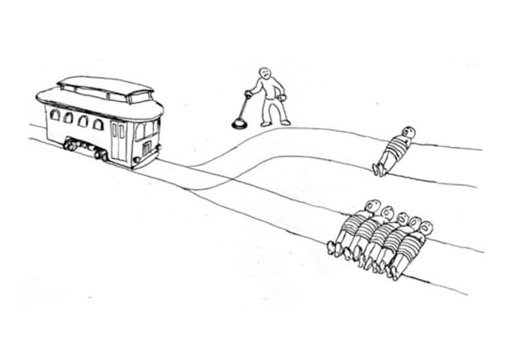

Képfelismerés
Agyunknak nagyon egyszerű egy képről megmondani, hogy mi van rajta. Triviális megkülönböztetni egy jaguárt
egy oroszlántól, vagy felismerni egy STOP táblát. Ez sajnos a számítógépeknek nem ilyen egyszerű dolog és nem írhatunk
csak szimplán annyit kódunkba, hogy if (isLion) { ... } és akkor a gép felismeri, hogy ez egy oroszlán.
Vagy mégis?
Önvezető autók
Az elmúlt években rengeteget fejlődött a képfelismerés és már olyan szintre jutott, hogy autókban is használják ezzel okosautókat eredményezve. Ám ezeknek is megvannak a maga határai. Mostanra már azt tervezték, hogy egy autó el fog tudni utazni az USA egyik partjáról a másik partjára tökéletesen, ám ettől még nagyon messze állunk. Egyelőre még csak meghatározott városokban tesztelik az autókat és a működésük nem mindig tökéletes. Persze nem lehet mindig a szoftvert hibáztatni, sokszor egy emberi vezető sem tudta volna megoldani a balesetet, ami történt. Egy számítógépnek sokkal jobb a reakcióideje, így hamarabb tud reagálni a veszélyekre.
Egy másik fontos dolog amit érdekesnek tartok az önvezető autókkal kapcsolatban az az úgynevezett Trolley problem. Hadd vázoljam fel a problémát mielőtt még elkalandoznál a link irányába. Te egy vasúti alkalmazott vagy és azt a feladatot kaptad, hogy egy vasúti elágazásnál kell irányítanod, hogy merre menjenek a vasúti kocsik. Elég unalmas a munka és így sokszor elkalandozik a figyelmed, éppen egy ilyen alkalom van és későn veszed észre, hogy a sínre tévedt egy ember, és hoppá a másik irányban pedig ott van öt ember. Hirtelen a vonatot is észreveszed, ami közeledik és már az sem tud időben megállni. Egyértelművé válik, hogy itt a te kezedben van a döntés.
|  |
Ez egyszerű volt nem? Valószínűleg a legtöbben az egy embert választották. Nehezítsük kicsit a problémát. Az egyik oldalon egy öregember, a másik oldalon egy negyvenes éveiben levő bizniszember. Melyik felé irányítod a vasúti kocsit?
Itt a fiatalabbak valószínűleg az öregember felé, az idősebbek pedig a fiatalabb felé irányítják. Mind a kettő mögött megvan a logika persze.
A lényeg az, hogy nem tudunk egyértelműen választani. Ha egy önvezető autó egy ilyen helyzetbe kerül, ahol egy baleset során a kettő rossz közül kell választania, akkor mit tegyen? Pillanatok alatt létrejöhet egy ilyen helyzet és pillanatok alatt meg is kell hoznia a döntést. Nem konzultálhat az utasokkal. Valahogy előre meg kell határozni egy sorrendet, hogy kinek menjen neki, és kinek okozzon lehetséges halálos sérülést. Képzeljük el, hogy valamiért úgy dönt, hogy az egyik ilyen áldozat a rokonunk vagy barátunk. Megvennénk egy ilyen autót, ami lehetségesen elüti az ismerősünket? Tudnánk ezzel a tudattal élni, hogy ez megtörtént?
Persze itt is adódhat egy harmadik lehetőség. Vagy elüt valakit, vagy nekimegy egy épületnek és akkor nem az úton levő emberek sérülnek, hanem az autóban ülők. De ez nem egy jó bizniszmodell, hogy itt van ez az autó és ha azt látja legjobbnak akkor lehet a benne ülők biztonságát fogja veszélyeztetni. Ki venné ezt meg?
Működés
Egy érdekesség után próbáljuk meg valamennyire megérteni, hogy hogyan is működik egy mesterséges intelligencia ami az ilyen autók mögött van. Amit itt leírok az messze áll a teljes áttekintéstől és ha valaki ezek után további linkeket szeretne az itt talál.
Manapság a tudósok a neurális hálókon alapuló mesterséges intelligenciába fektetnek sok munkát. Ezek az emberi agyat veszik mintául. Valamilyen adatot beadunk neki, ő azt feldolgozza és kijön a kimenet.

Vegyünk egy nagyon alap példát. A bemeneti rétegbe bemegy három szám és azt akarjuk megtudni, hogy ennek a három számnak az összege nagyobb-e mint a szorzata. Persze ezt alap programozási módszerekkel nagyon egyszerű megoldani ezért nem érdemes ilyenkor neurális hálózatokat alkotni, de most a főnökünk midnenképpen azt szeretné, hogy neurális hálókkal dolgozzunk, mert akkor a prezentáció a befektetőknek sokkal jobban fog kinézni. Szóval bemegy három szám. Az összekötött csomópontok azt jelentik, hogy balról jobbra elküldik ezt a számot, de közben megszorozzák egy adott értékkel, amit a legelején random választ ki. Tehát mondjuk bemegy 35 és a legfelsőket összekötő élen ez a súlyozás 0.35. Ilyenkor 35 * 0.35 = 12.25 fog tobábbmenni a felső csomópontba. Viszont oda nem csak az első inputból mennek majd adatok, hanem az összes bemeneti csomópontból, csak midnenhonnan más súlyozással. Ezeket a második réteg pontja majd összeadja és ő is továbbadja a következő csomópontnak. Ez így megy addig amég van rejtett réteg és amikor elérkezünk a kimeneti réteghez akkor kijön itt jelenelg egy szám, ami mondjuk ha >= 0.5 akkor IGAZ az állítás, egyébként hamis.
Mint mondtam ezek a súlyozások alapból random vannak meghatározva ezért ha csak nincsen nagyon nagy szerencsénk (ezek a hálók általában sokkal több réteget tartalmaznak, szóval sokkal több él is keletkezik) akkor nem fogja azt csinálni a háló ami szeretnénk. Így tréningeltetni kell. Mit jelent ez? Jelenleg ezt megcsinálhatjuk úgy, hogy beadunk neki három számot, ő kiköpi, hogy IGAZ vagy HAMIS és mi ezt leellenőrizzük. Ezek után az alapján fogja magának átállítani az éleknek a súlyát, hogy helyesen válaszolt a kérdésünkre vagy nem. Azt, hogy ezt hogyan teszi azt most nem részletezném. Így például ha van egy olyan csomópont, ahol meghatározza a számok összegét akkor az oda vezető éleknek mindnek 1-nek kell lennie és sok tréning után ezt el is fogja érni.
Feltéve, hogy van egy ilyen csomópontunk. Az egyik hátránya az ilyen hálóknak az az, hogy nem tudjuk mi történik bennük. Megvizsgálhatjuk, hogy hogyan alakulnak a súlyok, vagy hogy az adatunk hogy néz ki egy adott rejtett réteg után de abból sem biztos, hogy ki fog derülni mi is történik pontosan ebben a fekete dobozban.
Egy másik hátránya pedig az, hogy ez a tréning ez rengeteg időt vehet igénybe. Lásd önvezető autók. Még mindig nem tudják tökéletesen meghatározni a táblákat az út szélén stb.
Összefoglalva a neurális hálókkal olyan problémát oldottunk meg, amit eddig nem tudtunk. Viszont a hátrányai miatt érdemes elgondolkodni más módszereken is.